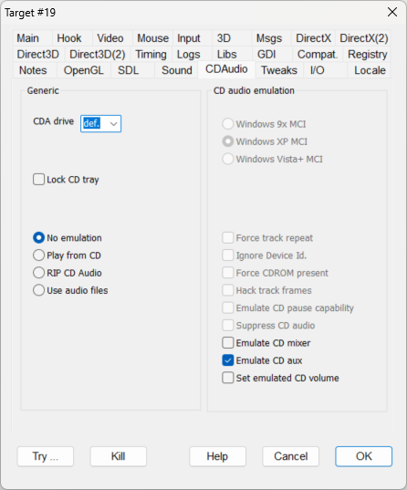

Generic
|
CDA Drive |
CDADrive |
Most programs that play music directly from the audio tracks of a CD use MCI functions providing a generic indication about the CD drive. In effect, unless instructed differently, MCI plays music from the first CD drive, that is the CD drive with the lowest letter that holds a CD with audio tracks. This may become a problem if the user has more than one CD drive and wish to leave more than one audio CD inserted: this way, only the first drive would be used. The situation was uncommon until the arrival of virtual CD drives (like "DAEMON Tools", "MagicISO" and so forth) which made the setting of many CD drives extremely easy and cheap, with users leaving the CD images mounted. The "CDA Drive" combo box lists all the CD drives present in the system and forces the hooked program to use the specified drive letter instead of the default one chosen by the MCI system. The first entry in the combo box named "def." selects the default MCI behavior.
|
|
Lock CD tray |
LOCKCDTRAY |
Attempts to bypass all operations that may open/close the physical CD tray. |
 NOTE: The drive list is built each time DxWnd is run. If you change the CD configuration by adding or deleting drives, it will be necessary to quit and start DxWnd again.
NOTE: The drive list is built each time DxWnd is run. If you change the CD configuration by adding or deleting drives, it will be necessary to quit and start DxWnd again.
CD audio emulation
Emulation mode
|
No emulation |
This is the default mode. DxWnd doesn't emulate the MCI audio processing, but the CD-DA redirection using the CD drive specified in the "CDA Drive" listbox is still available. |
|
|
Play from CD |
VIRTUALCDAUDIO + PLAYFROMCD |
DxWnd emulates the MCI audio processing, reading the audio tracks directly from a CD drive. The CD can be either a physical CD or a CD image mounted on a CD drive emulator capable of emulating the audio tracks. |
|
RIP CD Audio |
VIRTUALCDAUDIO + CDAUTOMATICRIP |
DxWnd makes an automatic RIP of the audio tracks present in the selected CD drive writing them as .wav files inside a "Music" subfolder of the game folder. This way, the tracks are no longer required to be ripped again and it is advisable to select the "Use audio files" mode before the next launch of the program. |
|
Use audio files |
VIRTUALCDAUDIO |
DxWnd plays the audio tracks using audio files located in the "Music" subfolder of the target program folder. Audio files can be encoded in several supported formats: .wav, .mp3, .ogg, .flac. For a detailed tutorial, see Tutorials > Virtual CD Audio. NOTE: When using this mode, the CD drive selected in the "CDA Drive" listbox is ignored. |
MCI platform
|
Windows 9x MCI |
VIRTUALCDAUDIO + EMULATEWIN9XMCI |
Emulates the incomplete behavior of the MCI system of Windows 95, Windows 98 and Windows ME. |
|
Windows XP MCI |
VIRTUALCDAUDIO |
Emulates the fully developed behavior of the MCI system of Windows XP SP3. It is the default and suggested choice. |
|
Windows Vista+ MCI |
VIRTUALCDAUDIO + EMULATEVISTAMCI |
Emulates the incomplete and bugged behavior of the MCI system starting from Windows Vista and the following, up to the current Windows 11. |
MCI flags
|
Force track repeat |
FORCETRACKREPEAT |
Forces the repetition of a track, unlike the original behaviour of the program. |
|
Ignore Device Id. |
IGNOREMCIDEVID |
The audio CD player emulation needs to know whether a given ID belongs to a video device (e.g., when playing a movie) or an audio device (the CD-ROM reader to play a soundtrack). To avoid ambiguity, the fake audio devices are opened returning a fake device ID 0xBEEF that will never overlap a valid real device ID. But in some cases, the device is opened before the hook takes place, so the audio device could get a real device ID (like 0, 1 or such) unless you set strong injection modes ("Inject DLL" mode or "Debugger" mode). But if such an ambiguity does not exist, the IGNOREMCIDEVID flag tells the audio emulator to handle any device ID, no matter if it is real or a fake 0xBEEF. This allows to make audio emulation also work with the default hooking, and in cases when the device is opened before the hook. |
|
Force CDROM present |
CDROMPRESENT |
Pretends that there is a CD-ROM disk ready to be played in each queried device. |
|
Hack track frames |
HACKMCIFRAMES |
Some games (so far, "Absolute Terror") could use a fake CD track frame counter as a copy protection mechanism. The flag causes the CD-DA emulation to return an hacked frame counter value for each track as stored in the "mcihack.txt" file located in the "Music" folder. |
|
Emulate CD pause capability |
CDPAUSECAPABILITY |
According to the MSDN documentation, a CD drive may or may not have the capability to pause the music play. Depending on that, when a "pause" command is sent, the returned drive status could be either "pause" or "stop". Since the majority of drives doesn't have this capability, it is possible that a program may simply expect the "stop" answer. This is what happens with "Speedboat Attack" that, after a pause command is sent entering the ESC key during a boat race, it resumes the music play only if the status is equal to "stop" and not "paused". For these reasons the flag is defaulted to off. |
|
Suppress CD audio |
SUPPRESSCDAUDIO |
Experimental flag, pretends that the system has no audio CD, also if such a device is present. In order to have effect, the flag must be set together with VIRTUALCDAUDIO. |
|
Emulate CD mixer |
EMULATECDMIXER |
When this flag is set, all operations directed to the CD Audio volume mixer are instead redirected to the CD-DA emulation. This way, commands to change or mute the music volume level can be correctly performed. |
|
Emulate CD aux |
EMULATECDAUX |
When this flag is set, DxWnd pretends that there are aux ports dedicated to the sound mixer and the CD device. Some games control the volume level by changing the volume at the aux ports, so this may let the volume control of the emulated CD-DA to work. It should be used when necessary. |
|
Set emulated CD volume |
|
When enabled, it allows the adjustment of the emulated CD-DA volume using the slider. This is useful for games that have a broken in-game volume control which do not allow the setting of music volume independently from the effects volume. |
mcihack.txt
The file "mcihack.txt" allows the definition of the special behaviors of the MCI calls accessing the virtual CD.
It is a standard Windows .ini file composed by different sections: [info] identity=value : defines the CD identity (ref. mciSendString("info cdaudio identity")) product=value : defines the CD product code (ref. mciSendString("info cdaudio upc")) [frames] tracknn=value : forces the track length of tracknn when requested in frames [msec] tracknn=value : forces the track length of tracknn when requested in milliseconds [tmsf] tracknn=value : forces the track length of tracknn when requested in tmsf format